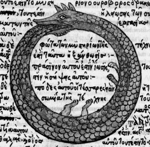

끼이익.. 우연히 밀어서 나온 네번째방은 지금까지의 방과 크게 다르지 않았다.
역시 문에는 문제가 적혀있었고, 아래엔 뱀이 자신의 꼬리를 문 그림이 그려져 있었다.
====================================================================================
나는 눈을 떴을 때 다른 세계에 온 것을 직감했다.
그리고 내 눈앞에는 커다란 독수리 머리를 가진 그것이 반시계 방향으로 빙글빙글 돌기 시작했다.
그것의 몸뚱아리는 마치 뱀과 같았으며 색 또한 녹색이었다.
돌다 멈추고 돌다 멈추는 행위를 반복하던 그놈은 10번쯤 그랬을까.. 그 자리에서 크게 입을 벌렸다.

====================================================================================